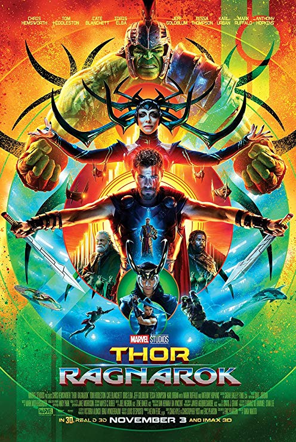

|  |
Movie Name: |
Thor: Ragnarok (2017) |
|
After defeating the demon Surtur—who was prophesied to destroy Asgard in the apocalyptic Ragnarok—Thor takes Surtur’s crown back to Asgard, only to discover his father Odin is missing and his supposedly dead brother Loki is reigning in his place in disguise. There’s a lot going on here, not least of which is the seemingly throwaway event of Surtur’s crown ending up in the “safety” of Odin’s vault. But the true plot-turner is Thor’s discovery that Odin is missing. This is what kicks off the entire conflict to come. Thor and Loki track Odin down in Norway, only to watch him die—an event which releases from her prison their unknown sister Hela. She returns and, shockingly, destroys Thor’s powerful hammer Mjolnir. This is the Key Event, in which the protagonist is thrust from the Normal World. As Hela then pursues Thor and Loki on her way back to Asgard, she ejects them both from the Bifrost. Thor tumbles through space and ends up on the strange planet Sakaar, where he is promptly captured by Scrapper 142. This is the First Plot Point, in which he is then thrust into the Adventure World of the Second Act’s conflict, with his primary goal being that of returning to Hela to prevent her from destroying Asgard. Back on Asgard, Hela slaughters the Asgardian army and resurrects her long-dead warriors and her giant wolf Fenrir. Meanwhile, Thor is delivered to the Grandmaster, who rules Sakaar, and informed he will have to fight the Grandmaster’s “beloved champion” in a lethal gladiatorial contest. Although Hela is the overarching antagonist in this story (as proven by her bookending presence in the First and Third Acts), the Grandmaster is Thor’s de facto antagonist in the Second Act, since he’s the one creating the obstacle between Thor and his goal of leaving Sakaar. In the Battle of Champions, Thor faces the Grandmaster’s favorite—only to discover it’s the long-missing Hulk. Unable to get through to the Hulk’s alter-ego, scientist Bruce Banner, Thor is forced to fight him. He is almost defeated until he experiences a metaphorical Moment of Truth, when he experiences a vision of his dead father and taps into a tremendous new power source that allows him to control lightning. He is on the verge of defeating the Hulk, only to have the Grandmaster taze him. Moments of Truth are often tricky in action movies, since these stories aren’t generally about growing existential awareness. However, this is a lovely and understated use of the concept. Thor doesn’t discover a thematic Truth so much as he discovers a literal Truth about himself, even though he doesn’t yet really understand it. Thor calls upon the guardian of the Bifrost, Heimdall, and is able to see through Heimdall’s eyes the destruction Hela is wreaking on Asgard and its people. Heimdall gives Thor a clue about how to escape Sakaar, which turns the plot by immediately prompting Thor’s escape from the Hulk’s quarters and his plan to leave Sakaar and return home, with or without help. As in most action movies, there isn’t really a low point here, but rather just a turning into the full-on action mode of the Third Act. Thor, Banner (once again himself), and Scrapper 142 (who turned out to be the last Valkyrie, sworn to protect the Asgardian throne) steal the Grandmaster’s pleasure yacht and escape Sakaar through a wormhole. In challenging Hela, Thor finally and fully discovers his true kingly powers and hits her with the “biggest lightning bolt in the history of lightning.” This allows him to defeat her army and make sure the surviving Asgardians are boarded onto the ship Loki has brought. However, it does not defeat Hela herself. Thor realizes the only way to defeat Hela is to cause Ragnarok and destroy Asgard, her source of power. While he holds her off, he sends Loki to resurrect Surtur—who plunges his sword into the heart of Asgard, destroying Hela. On the escaping ship, Thor must face the consequences of his decision to destroy his home planet, as well as finally accept the responsibilities of being king. |
||